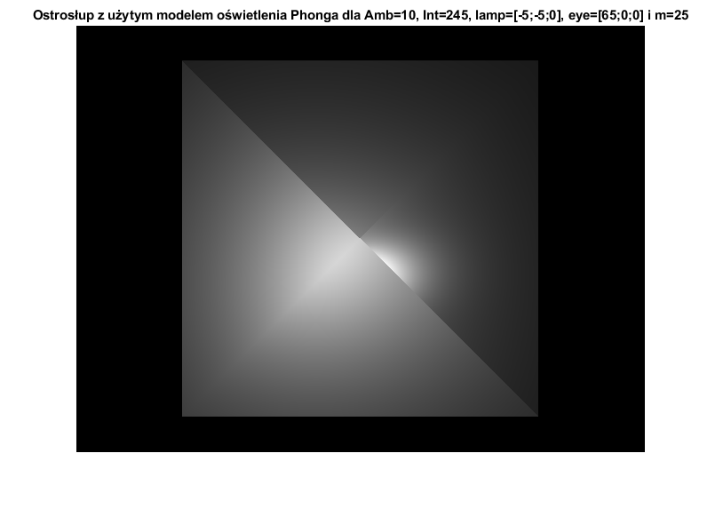
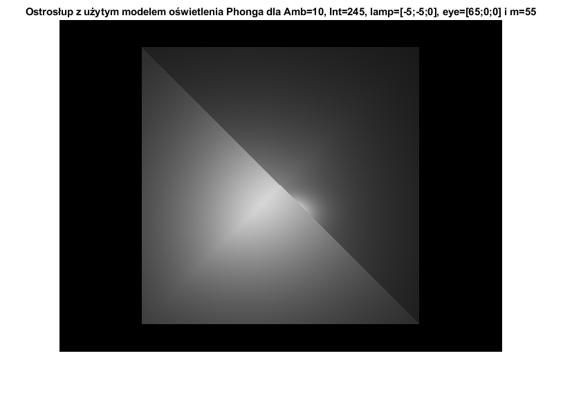

Contents
WARTOŚCI POCZĄTKOWE I ZMIENNE POMOCNICZE
% rozdzielczość obrazka X = 640; Y = 480; % rozmiar piksela pixel = 0.1; % wierzchołki ostrosłupa (o kwadratowej podstawie) r1 = [20;20;20;1]; % narożnik C r2 = [20;-20;20;1]; % narożnik B r3 = [-20;-20;20;1]; % narożnik A r4 = [-20;20;20;1]; % narożnik D r5 = [0;0;10;1]; % wierzchołek E % poziom oświetlenia tła Amb = 10; % natężenie źródła światła Int = 245; % współczynnik alfa alfa = 0.001; % trójkąt ABE (ściana ostrosłupa 1) Ish1 = inside(r3,r2,r5, Y, X, pixel, pixel); [A1,B1,C1,D1] = plane(r3,r2,r5); nA = [A1;B1;C1]/norm([A1;B1;C1]); % trójkąt BCE (ściana ostrosłupa 2) Ish2 = inside(r2,r1,r5, Y, X, pixel, pixel); [A2,B2,C2,D2] = plane(r2,r1,r5); nB = [A2;B2;C2]/norm([A2;B2;C2]); % trójkąt CDE (ściana ostrosłupa 3) Ish3 = inside(r1,r4,r5, Y, X, pixel, pixel); [A3,B3,C3,D3] = plane(r1,r4,r5); nC = [A3;B3;C3]/norm([A3;B3;C3]); % trójkąt DAE (ściana ostrosłupa 4) Ish4 = inside(r4,r3,r5, Y, X, pixel, pixel); [A4,B4,C4,D4] = plane(r4,r3,r5); nD = [A4;B4;C4]/norm([A4;B4;C4]);
CZĘŚĆ 1
Zadanie 1 A
Model oświetlenia Lamberta z pojedynczym punktowym źródłem światła w punkcie o współrzędnych [10,0,0].
Im1 = uint8(zeros(Y,X)); lamp = [10;0;0]; for i = 1:X for j = 1:Y if Ish1(j,i)==255 [xx,yy] = im2real(X,Y,pixel,pixel,i,j); [d,x,y,z] = dist2plane(A1,B1,C1,D1,xx,yy,0,0,0,1); l = [x;y;z]-lamp; dist = norm(l); l = l/dist; cs = nA'*l; if cs < 0 cs = 0; end Im1(j,i) = uint8(Amb+Int*cs/(1+alfa*dist*dist)); end if Ish2(j,i)==255 && Ish1(j,i) == 0 [xx,yy] = im2real(X,Y,pixel,pixel,i,j); [d,x,y,z] = dist2plane(A2,B2,C2,D2,xx,yy,0,0,0,1); l = [x;y;z]-lamp; dist = norm(l); l = l/dist; cs = nB'*l; if cs < 0 cs = 0; end Im1(j,i) = uint8(Amb+Int*cs/(1+alfa*dist*dist)); end if Ish3(j,i)==255 && Ish2(j,i) == 0 && Ish1(j,i) == 0 [xx,yy] = im2real(X,Y,pixel,pixel,i,j); [d,x,y,z] = dist2plane(A3,B3,C3,D3,xx,yy,0,0,0,1); l = [x;y;z]-lamp; dist = norm(l); l = l/dist; cs = nC'*l; if cs < 0 cs = 0; end Im1(j,i) = uint8(Amb+Int*cs/(1+alfa*dist*dist)); end if Ish4(j,i)==255 && Ish3(j,i) == 0 && Ish2(j,i) == 0 && Ish1(j,i) == 0 [xx,yy] = im2real(X,Y,pixel,pixel,i,j); [d,x,y,z] = dist2plane(A4,B4,C4,D4,xx,yy,0,0,0,1); l = [x;y;z]-lamp; dist = norm(l); l = l/dist; cs = nD'*l; if cs < 0 cs = 0; end Im1(j,i) = uint8(Amb+Int*cs/(1+alfa*dist*dist)); end end end figure(1); imshow(Im1); title('Ostrosłup z użytym modelem oświetlenia Lamberta dla Amb=10, Int=245 i lamp=[10;0;0]');
Zadanie 1 B
Model oświetlenia Lamberta z pojedynczym punktowym źródłem światła w punkcie o współrzędnych [-5,-5,0].
Im2 = uint8(zeros(Y,X)); lamp = [-5;-5;0]; for i = 1:X for j = 1:Y if Ish1(j,i)==255 [xx,yy] = im2real(X,Y,0.1,0.1,i,j); [d,x,y,z] = dist2plane(A1,B1,C1,D1,xx,yy,0,0,0,1); l = [x;y;z]-lamp; dist = norm(l); l = l/dist; cs = nA'*l; if cs < 0 cs = 0; end Im2(j,i) = uint8(Amb+Int*cs/(1+alfa*dist*dist)); end if Ish2(j,i)==255 && Ish1(j,i) == 0 [xx,yy] = im2real(X,Y,0.1,0.1,i,j); [d,x,y,z] = dist2plane(A2,B2,C2,D2,xx,yy,0,0,0,1); l = [x;y;z]-lamp; dist = norm(l); l = l/dist; cs = nB'*l; if cs < 0 cs = 0; end Im2(j,i) = uint8(Amb+Int*cs/(1+alfa*dist*dist)); end if Ish3(j,i)==255 && Ish2(j,i) == 0 && Ish1(j,i) == 0 [xx,yy] = im2real(X,Y,0.1,0.1,i,j); [d,x,y,z] = dist2plane(A3,B3,C3,D3,xx,yy,0,0,0,1); l = [x;y;z]-lamp; dist = norm(l); l = l/dist; cs = nC'*l; if cs < 0 cs = 0; end Im2(j,i) = uint8(Amb+Int*cs/(1+alfa*dist*dist)); end if Ish4(j,i)==255 && Ish3(j,i) == 0 && Ish2(j,i) == 0 && Ish1(j,i) == 0 [xx,yy] = im2real(X,Y,0.1,0.1,i,j); [d,x,y,z] = dist2plane(A4,B4,C4,D4,xx,yy,0,0,0,1); l = [x;y;z]-lamp; dist = norm(l); l = l/dist; cs = nD'*l; if cs < 0 cs = 0; end Im2(j,i) = uint8(Amb+Int*cs/(1+alfa*dist*dist)); end end end figure(2); imshow(Im2); title('Ostrosłup z użytym modelem oświetlenia Lamberta dla Amb=10, Int=245 i lamp=[-5;-5;0]');
Zadanie 1 C
Model oświetlenia Phonga z pojedynczym punktowym źródłem światła w punkcie o współrzędnych [10,0,0], wirtualnym okiem obserwatora w punkcie o współrzędnych [65,0,0] oraz wartości parametru m=15.
Im3 = uint8(zeros(Y,X)); lamp = [10;0;0]; eye = [65;0;0]; m = 15; for i = 1:X for j = 1:Y if Ish1(j,i)==255 [xx,yy] = im2real(X,Y,0.1,0.1,i,j); [d,x,y,z] = dist2plane(A1,B1,C1,D1,xx,yy,0,0,0,1); l = [x;y;z]-lamp; dist = norm(l); l = l/dist; cs = nA'*l; if cs < 0 cs = 0; end temp = Amb+Int*cs/(1+alfa*dist*dist); rp = 2*(nA'*l)*nA-l; rp = rp/norm(rp); vp = [x;y;z]-eye; vp = vp/norm(vp); cs1 = rp'*vp; if cs1 < 0 cs1 = 0; end temp = temp+(Int/(1+alfa*dist*dist))*(cs1^m); if temp > 255 temp = 255; end Im3(j,i) = temp; end if Ish2(j,i)==255 && Ish1(j,i) == 0 [xx,yy] = im2real(X,Y,0.1,0.1,i,j); [d,x,y,z] = dist2plane(A2,B2,C2,D2,xx,yy,0,0,0,1); l = [x;y;z]-lamp; dist = norm(l); l = l/dist; cs = nB'*l; if cs < 0 cs = 0; end temp = Amb+Int*cs/(1+alfa*dist*dist); rp = 2*(nB'*l)*nB-l; rp = rp/norm(rp); vp = [x;y;z]-eye; vp = vp/norm(vp); cs1 = rp'*vp; if cs1 < 0 cs1 = 0; end temp = temp+(Int/(1+alfa*dist*dist))*(cs1^m); if temp > 255 temp = 255; end Im3(j,i) = temp; end if Ish3(j,i)==255 && Ish2(j,i) == 0 && Ish1(j,i) == 0 [xx,yy] = im2real(X,Y,0.1,0.1,i,j); [d,x,y,z] = dist2plane(A3,B3,C3,D3,xx,yy,0,0,0,1); l = [x;y;z]-lamp; dist = norm(l); l = l/dist; cs = nC'*l; if cs < 0 cs = 0; end temp = Amb+Int*cs/(1+alfa*dist*dist); rp = 2*(nC'*l)*nC-l; rp = rp/norm(rp); vp = [x;y;z]-eye; vp = vp/norm(vp); cs1 = rp'*vp; if cs1 < 0 cs1 = 0; end temp = temp+(Int/(1+alfa*dist*dist))*(cs1^m); if temp > 255 temp = 255; end Im3(j,i) = temp; end if Ish4(j,i)==255 && Ish3(j,i) == 0 && Ish2(j,i) == 0 && Ish1(j,i) == 0 [xx,yy] = im2real(X,Y,0.1,0.1,i,j); [d,x,y,z] = dist2plane(A4,B4,C4,D4,xx,yy,0,0,0,1); l = [x;y;z]-lamp; dist = norm(l); l = l/dist; cs = nD'*l; if cs < 0 cs = 0; end temp = Amb+Int*cs/(1+alfa*dist*dist); rp = 2*(nD'*l)*nD-l; rp = rp/norm(rp); vp = [x;y;z]-eye; vp = vp/norm(vp); cs1 = rp'*vp; if cs1 < 0 cs1 = 0; end temp = temp+(Int/(1+alfa*dist*dist))*(cs1^m); if temp > 255 temp = 255; end Im3(j,i) = temp; end end end figure(3); imshow(Im3); title('Ostrosłup z użytym modelem oświetlenia Phonga dla Amb=10, Int=245, lamp=[10;0;0], eye=[65;0;0] i m=15'); % dodatkowe przykłady dla różnych wartości parametru m (1. m = 5, 2. m = 25, 3. m = 55) Im5 = uint8(zeros(Y,X)); m = 5; for i = 1:X for j = 1:Y if Ish1(j,i)==255 [xx,yy] = im2real(X,Y,0.1,0.1,i,j); [d,x,y,z] = dist2plane(A1,B1,C1,D1,xx,yy,0,0,0,1); l = [x;y;z]-lamp; dist = norm(l); l = l/dist; cs = nA'*l; if cs < 0 cs = 0; end temp = Amb+Int*cs/(1+alfa*dist*dist); rp = 2*(nA'*l)*nA-l; rp = rp/norm(rp); vp = [x;y;z]-eye; vp = vp/norm(vp); cs1 = rp'*vp; if cs1 < 0 cs1 = 0; end temp = temp+(Int/(1+alfa*dist*dist))*(cs1^m); if temp > 255 temp = 255; end Im5(j,i) = temp; end if Ish2(j,i)==255 && Ish1(j,i) == 0 [xx,yy] = im2real(X,Y,0.1,0.1,i,j); [d,x,y,z] = dist2plane(A2,B2,C2,D2,xx,yy,0,0,0,1); l = [x;y;z]-lamp; dist = norm(l); l = l/dist; cs = nB'*l; if cs < 0 cs = 0; end temp = Amb+Int*cs/(1+alfa*dist*dist); rp = 2*(nB'*l)*nB-l; rp = rp/norm(rp); vp = [x;y;z]-eye; vp = vp/norm(vp); cs1 = rp'*vp; if cs1 < 0 cs1 = 0; end temp = temp+(Int/(1+alfa*dist*dist))*(cs1^m); if temp > 255 temp = 255; end Im5(j,i) = temp; end if Ish3(j,i)==255 && Ish2(j,i) == 0 && Ish1(j,i) == 0 [xx,yy] = im2real(X,Y,0.1,0.1,i,j); [d,x,y,z] = dist2plane(A3,B3,C3,D3,xx,yy,0,0,0,1); l = [x;y;z]-lamp; dist = norm(l); l = l/dist; cs = nC'*l; if cs < 0 cs = 0; end temp = Amb+Int*cs/(1+alfa*dist*dist); rp = 2*(nC'*l)*nC-l; rp = rp/norm(rp); vp = [x;y;z]-eye; vp = vp/norm(vp); cs1 = rp'*vp; if cs1 < 0 cs1 = 0; end temp = temp+(Int/(1+alfa*dist*dist))*(cs1^m); if temp > 255 temp = 255; end Im5(j,i) = temp; end if Ish4(j,i)==255 && Ish3(j,i) == 0 && Ish2(j,i) == 0 && Ish1(j,i) == 0 [xx,yy] = im2real(X,Y,0.1,0.1,i,j); [d,x,y,z] = dist2plane(A4,B4,C4,D4,xx,yy,0,0,0,1); l = [x;y;z]-lamp; dist = norm(l); l = l/dist; cs = nD'*l; if cs < 0 cs = 0; end temp = Amb+Int*cs/(1+alfa*dist*dist); rp = 2*(nD'*l)*nD-l; rp = rp/norm(rp); vp = [x;y;z]-eye; vp = vp/norm(vp); cs1 = rp'*vp; if cs1 < 0 cs1 = 0; end temp = temp+(Int/(1+alfa*dist*dist))*(cs1^m); if temp > 255 temp = 255; end Im5(j,i) = temp; end end end figure(5); imshow(Im5); title('Ostrosłup z użytym modelem oświetlenia Phonga dla Amb=10, Int=245, lamp=[10;0;0], eye=[65;0;0] i m=5'); Im7 = uint8(zeros(Y,X)); m = 25; for i = 1:X for j = 1:Y if Ish1(j,i)==255 [xx,yy] = im2real(X,Y,0.1,0.1,i,j); [d,x,y,z] = dist2plane(A1,B1,C1,D1,xx,yy,0,0,0,1); l = [x;y;z]-lamp; dist = norm(l); l = l/dist; cs = nA'*l; if cs < 0 cs = 0; end temp = Amb+Int*cs/(1+alfa*dist*dist); rp = 2*(nA'*l)*nA-l; rp = rp/norm(rp); vp = [x;y;z]-eye; vp = vp/norm(vp); cs1 = rp'*vp; if cs1 < 0 cs1 = 0; end temp = temp+(Int/(1+alfa*dist*dist))*(cs1^m); if temp > 255 temp = 255; end Im7(j,i) = temp; end if Ish2(j,i)==255 && Ish1(j,i) == 0 [xx,yy] = im2real(X,Y,0.1,0.1,i,j); [d,x,y,z] = dist2plane(A2,B2,C2,D2,xx,yy,0,0,0,1); l = [x;y;z]-lamp; dist = norm(l); l = l/dist; cs = nB'*l; if cs < 0 cs = 0; end temp = Amb+Int*cs/(1+alfa*dist*dist); rp = 2*(nB'*l)*nB-l; rp = rp/norm(rp); vp = [x;y;z]-eye; vp = vp/norm(vp); cs1 = rp'*vp; if cs1 < 0 cs1 = 0; end temp = temp+(Int/(1+alfa*dist*dist))*(cs1^m); if temp > 255 temp = 255; end Im7(j,i) = temp; end if Ish3(j,i)==255 && Ish2(j,i) == 0 && Ish1(j,i) == 0 [xx,yy] = im2real(X,Y,0.1,0.1,i,j); [d,x,y,z] = dist2plane(A3,B3,C3,D3,xx,yy,0,0,0,1); l = [x;y;z]-lamp; dist = norm(l); l = l/dist; cs = nC'*l; if cs < 0 cs = 0; end temp = Amb+Int*cs/(1+alfa*dist*dist); rp = 2*(nC'*l)*nC-l; rp = rp/norm(rp); vp = [x;y;z]-eye; vp = vp/norm(vp); cs1 = rp'*vp; if cs1 < 0 cs1 = 0; end temp = temp+(Int/(1+alfa*dist*dist))*(cs1^m); if temp > 255 temp = 255; end Im7(j,i) = temp; end if Ish4(j,i)==255 && Ish3(j,i) == 0 && Ish2(j,i) == 0 && Ish1(j,i) == 0 [xx,yy] = im2real(X,Y,0.1,0.1,i,j); [d,x,y,z] = dist2plane(A4,B4,C4,D4,xx,yy,0,0,0,1); l = [x;y;z]-lamp; dist = norm(l); l = l/dist; cs = nD'*l; if cs < 0 cs = 0; end temp = Amb+Int*cs/(1+alfa*dist*dist); rp = 2*(nD'*l)*nD-l; rp = rp/norm(rp); vp = [x;y;z]-eye; vp = vp/norm(vp); cs1 = rp'*vp; if cs1 < 0 cs1 = 0; end temp = temp+(Int/(1+alfa*dist*dist))*(cs1^m); if temp > 255 temp = 255; end Im7(j,i) = temp; end end end figure(7); imshow(Im7); title('Ostrosłup z użytym modelem oświetlenia Phonga dla Amb=10, Int=245, lamp=[10;0;0], eye=[65;0;0] i m=25'); Im9 = uint8(zeros(Y,X)); m = 55; for i = 1:X for j = 1:Y if Ish1(j,i)==255 [xx,yy] = im2real(X,Y,0.1,0.1,i,j); [d,x,y,z] = dist2plane(A1,B1,C1,D1,xx,yy,0,0,0,1); l = [x;y;z]-lamp; dist = norm(l); l = l/dist; cs = nA'*l; if cs < 0 cs = 0; end temp = Amb+Int*cs/(1+alfa*dist*dist); rp = 2*(nA'*l)*nA-l; rp = rp/norm(rp); vp = [x;y;z]-eye; vp = vp/norm(vp); cs1 = rp'*vp; if cs1 < 0 cs1 = 0; end temp = temp+(Int/(1+alfa*dist*dist))*(cs1^m); if temp > 255 temp = 255; end Im9(j,i) = temp; end if Ish2(j,i)==255 && Ish1(j,i) == 0 [xx,yy] = im2real(X,Y,0.1,0.1,i,j); [d,x,y,z] = dist2plane(A2,B2,C2,D2,xx,yy,0,0,0,1); l = [x;y;z]-lamp; dist = norm(l); l = l/dist; cs = nB'*l; if cs < 0 cs = 0; end temp = Amb+Int*cs/(1+alfa*dist*dist); rp = 2*(nB'*l)*nB-l; rp = rp/norm(rp); vp = [x;y;z]-eye; vp = vp/norm(vp); cs1 = rp'*vp; if cs1 < 0 cs1 = 0; end temp = temp+(Int/(1+alfa*dist*dist))*(cs1^m); if temp > 255 temp = 255; end Im9(j,i) = temp; end if Ish3(j,i)==255 && Ish2(j,i) == 0 && Ish1(j,i) == 0 [xx,yy] = im2real(X,Y,0.1,0.1,i,j); [d,x,y,z] = dist2plane(A3,B3,C3,D3,xx,yy,0,0,0,1); l = [x;y;z]-lamp; dist = norm(l); l = l/dist; cs = nC'*l; if cs < 0 cs = 0; end temp = Amb+Int*cs/(1+alfa*dist*dist); rp = 2*(nC'*l)*nC-l; rp = rp/norm(rp); vp = [x;y;z]-eye; vp = vp/norm(vp); cs1 = rp'*vp; if cs1 < 0 cs1 = 0; end temp = temp+(Int/(1+alfa*dist*dist))*(cs1^m); if temp > 255 temp = 255; end Im9(j,i) = temp; end if Ish4(j,i)==255 && Ish3(j,i) == 0 && Ish2(j,i) == 0 && Ish1(j,i) == 0 [xx,yy] = im2real(X,Y,0.1,0.1,i,j); [d,x,y,z] = dist2plane(A4,B4,C4,D4,xx,yy,0,0,0,1); l = [x;y;z]-lamp; dist = norm(l); l = l/dist; cs = nD'*l; if cs < 0 cs = 0; end temp = Amb+Int*cs/(1+alfa*dist*dist); rp = 2*(nD'*l)*nD-l; rp = rp/norm(rp); vp = [x;y;z]-eye; vp = vp/norm(vp); cs1 = rp'*vp; if cs1 < 0 cs1 = 0; end temp = temp+(Int/(1+alfa*dist*dist))*(cs1^m); if temp > 255 temp = 255; end Im9(j,i) = temp; end end end figure(9); imshow(Im9); title('Ostrosłup z użytym modelem oświetlenia Phonga dla Amb=10, Int=245, lamp=[10;0;0], eye=[65;0;0] i m=55');
Zadanie 1 D
Im4 = uint8(zeros(Y,X)); lamp = [-5;-5;0]; eye = [65;0;0]; m = 15; for i = 1:X for j = 1:Y if Ish1(j,i)==255 [xx,yy] = im2real(X,Y,0.1,0.1,i,j); [d,x,y,z] = dist2plane(A1,B1,C1,D1,xx,yy,0,0,0,1); l = [x;y;z]-lamp; dist = norm(l); l = l/dist; cs = nA'*l; if cs < 0 cs = 0; end temp = Amb+Int*cs/(1+alfa*dist*dist); rp = 2*(nA'*l)*nA-l; rp = rp/norm(rp); vp = [x;y;z]-eye; vp = vp/norm(vp); cs1 = rp'*vp; if cs1 < 0 cs1 = 0; end temp = temp+(Int/(1+alfa*dist*dist))*(cs1^m); if temp > 255 temp = 255; end Im4(j,i) = temp; end if Ish2(j,i)==255 && Ish1(j,i) == 0 [xx,yy] = im2real(X,Y,0.1,0.1,i,j); [d,x,y,z] = dist2plane(A2,B2,C2,D2,xx,yy,0,0,0,1); l = [x;y;z]-lamp; dist = norm(l); l = l/dist; cs = nB'*l; if cs < 0 cs = 0; end temp = Amb+Int*cs/(1+alfa*dist*dist); rp = 2*(nB'*l)*nB-l; rp = rp/norm(rp); vp = [x;y;z]-eye; vp = vp/norm(vp); cs1 = rp'*vp; if cs1 < 0 cs1 = 0; end temp = temp+(Int/(1+alfa*dist*dist))*(cs1^m); if temp > 255 temp = 255; end Im4(j,i) = temp; end if Ish3(j,i)==255 && Ish2(j,i) == 0 && Ish1(j,i) == 0 [xx,yy] = im2real(X,Y,0.1,0.1,i,j); [d,x,y,z] = dist2plane(A3,B3,C3,D3,xx,yy,0,0,0,1); l = [x;y;z]-lamp; dist = norm(l); l = l/dist; cs = nC'*l; if cs < 0 cs = 0; end temp = Amb+Int*cs/(1+alfa*dist*dist); rp = 2*(nC'*l)*nC-l; rp = rp/norm(rp); vp = [x;y;z]-eye; vp = vp/norm(vp); cs1 = rp'*vp; if cs1 < 0 cs1 = 0; end temp = temp+(Int/(1+alfa*dist*dist))*(cs1^m); if temp > 255 temp = 255; end Im4(j,i) = temp; end if Ish4(j,i)==255 && Ish3(j,i) == 0 && Ish2(j,i) == 0 && Ish1(j,i) == 0 [xx,yy] = im2real(X,Y,0.1,0.1,i,j); [d,x,y,z] = dist2plane(A4,B4,C4,D4,xx,yy,0,0,0,1); l = [x;y;z]-lamp; dist = norm(l); l = l/dist; cs = nD'*l; if cs < 0 cs = 0; end temp = Amb+Int*cs/(1+alfa*dist*dist); rp = 2*(nD'*l)*nD-l; rp = rp/norm(rp); vp = [x;y;z]-eye; vp = vp/norm(vp); cs1 = rp'*vp; if cs1 < 0 cs1 = 0; end temp = temp+(Int/(1+alfa*dist*dist))*(cs1^m); if temp > 255 temp = 255; end Im4(j,i) = temp; end end end figure(4);imshow(Im4); title('Ostrosłup z użytym modelem oświetlenia Phonga dla Amb=10, Int=245, lamp=[-5;-5;0], eye=[65;0;0] i m=15'); % dodatkowe przykłady dla różnych wartości parametru m (1. m = 5, 2. m = 25, 3. m = 55) Im6 = uint8(zeros(Y,X)); m = 5; for i = 1:X for j = 1:Y if Ish1(j,i)==255 [xx,yy] = im2real(X,Y,0.1,0.1,i,j); [d,x,y,z] = dist2plane(A1,B1,C1,D1,xx,yy,0,0,0,1); l = [x;y;z]-lamp; dist = norm(l); l = l/dist; cs = nA'*l; if cs < 0 cs = 0; end temp = Amb+Int*cs/(1+alfa*dist*dist); rp = 2*(nA'*l)*nA-l; rp = rp/norm(rp); vp = [x;y;z]-eye; vp = vp/norm(vp); cs1 = rp'*vp; if cs1 < 0 cs1 = 0; end temp = temp+(Int/(1+alfa*dist*dist))*(cs1^m); if temp > 255 temp = 255; end Im6(j,i) = temp; end if Ish2(j,i)==255 && Ish1(j,i) == 0 [xx,yy] = im2real(X,Y,0.1,0.1,i,j); [d,x,y,z] = dist2plane(A2,B2,C2,D2,xx,yy,0,0,0,1); l = [x;y;z]-lamp; dist = norm(l); l = l/dist; cs = nB'*l; if cs < 0 cs = 0; end temp = Amb+Int*cs/(1+alfa*dist*dist); rp = 2*(nB'*l)*nB-l; rp = rp/norm(rp); vp = [x;y;z]-eye; vp = vp/norm(vp); cs1 = rp'*vp; if cs1 < 0 cs1 = 0; end temp = temp+(Int/(1+alfa*dist*dist))*(cs1^m); if temp > 255 temp = 255; end Im6(j,i) = temp; end if Ish3(j,i)==255 && Ish2(j,i) == 0 && Ish1(j,i) == 0 [xx,yy] = im2real(X,Y,0.1,0.1,i,j); [d,x,y,z] = dist2plane(A3,B3,C3,D3,xx,yy,0,0,0,1); l = [x;y;z]-lamp; dist = norm(l); l = l/dist; cs = nC'*l; if cs < 0 cs = 0; end temp = Amb+Int*cs/(1+alfa*dist*dist); rp = 2*(nC'*l)*nC-l; rp = rp/norm(rp); vp = [x;y;z]-eye; vp = vp/norm(vp); cs1 = rp'*vp; if cs1 < 0 cs1 = 0; end temp = temp+(Int/(1+alfa*dist*dist))*(cs1^m); if temp > 255 temp = 255; end Im6(j,i) = temp; end if Ish4(j,i)==255 && Ish3(j,i) == 0 && Ish2(j,i) == 0 && Ish1(j,i) == 0 [xx,yy] = im2real(X,Y,0.1,0.1,i,j); [d,x,y,z] = dist2plane(A4,B4,C4,D4,xx,yy,0,0,0,1); l = [x;y;z]-lamp; dist = norm(l); l = l/dist; cs = nD'*l; if cs < 0 cs = 0; end temp = Amb+Int*cs/(1+alfa*dist*dist); rp = 2*(nD'*l)*nD-l; rp = rp/norm(rp); vp = [x;y;z]-eye; vp = vp/norm(vp); cs1 = rp'*vp; if cs1 < 0 cs1 = 0; end temp = temp+(Int/(1+alfa*dist*dist))*(cs1^m); if temp > 255 temp = 255; end Im6(j,i) = temp; end end end figure(6); imshow(Im6); title('Ostrosłup z użytym modelem oświetlenia Phonga dla Amb=10, Int=245, lamp=[-5;-5;0], eye=[65;0;0] i m=5'); Im8 = uint8(zeros(Y,X)); m = 25; for i = 1:X for j = 1:Y if Ish1(j,i)==255 [xx,yy] = im2real(X,Y,0.1,0.1,i,j); [d,x,y,z] = dist2plane(A1,B1,C1,D1,xx,yy,0,0,0,1); l = [x;y;z]-lamp; dist = norm(l); l = l/dist; cs = nA'*l; if cs < 0 cs = 0; end temp = Amb+Int*cs/(1+alfa*dist*dist); rp = 2*(nA'*l)*nA-l; rp = rp/norm(rp); vp = [x;y;z]-eye; vp = vp/norm(vp); cs1 = rp'*vp; if cs1 < 0 cs1 = 0; end temp = temp+(Int/(1+alfa*dist*dist))*(cs1^m); if temp > 255 temp = 255; end Im8(j,i) = temp; end if Ish2(j,i)==255 && Ish1(j,i) == 0 [xx,yy] = im2real(X,Y,0.1,0.1,i,j); [d,x,y,z] = dist2plane(A2,B2,C2,D2,xx,yy,0,0,0,1); l = [x;y;z]-lamp; dist = norm(l); l = l/dist; cs = nB'*l; if cs < 0 cs = 0; end temp = Amb+Int*cs/(1+alfa*dist*dist); rp = 2*(nB'*l)*nB-l; rp = rp/norm(rp); vp = [x;y;z]-eye; vp = vp/norm(vp); cs1 = rp'*vp; if cs1 < 0 cs1 = 0; end temp = temp+(Int/(1+alfa*dist*dist))*(cs1^m); if temp > 255 temp = 255; end Im8(j,i) = temp; end if Ish3(j,i)==255 && Ish2(j,i) == 0 && Ish1(j,i) == 0 [xx,yy] = im2real(X,Y,0.1,0.1,i,j); [d,x,y,z] = dist2plane(A3,B3,C3,D3,xx,yy,0,0,0,1); l = [x;y;z]-lamp; dist = norm(l); l = l/dist; cs = nC'*l; if cs < 0 cs = 0; end temp = Amb+Int*cs/(1+alfa*dist*dist); rp = 2*(nC'*l)*nC-l; rp = rp/norm(rp); vp = [x;y;z]-eye; vp = vp/norm(vp); cs1 = rp'*vp; if cs1 < 0 cs1 = 0; end temp = temp+(Int/(1+alfa*dist*dist))*(cs1^m); if temp > 255 temp = 255; end Im8(j,i) = temp; end if Ish4(j,i)==255 && Ish3(j,i) == 0 && Ish2(j,i) == 0 && Ish1(j,i) == 0 [xx,yy] = im2real(X,Y,0.1,0.1,i,j); [d,x,y,z] = dist2plane(A4,B4,C4,D4,xx,yy,0,0,0,1); l = [x;y;z]-lamp; dist = norm(l); l = l/dist; cs = nD'*l; if cs < 0 cs = 0; end temp = Amb+Int*cs/(1+alfa*dist*dist); rp = 2*(nD'*l)*nD-l; rp = rp/norm(rp); vp = [x;y;z]-eye; vp = vp/norm(vp); cs1 = rp'*vp; if cs1 < 0 cs1 = 0; end temp = temp+(Int/(1+alfa*dist*dist))*(cs1^m); if temp > 255 temp = 255; end Im8(j,i) = temp; end end end figure(8); imshow(Im8); title('Ostrosłup z użytym modelem oświetlenia Phonga dla Amb=10, Int=245, lamp=[-5;-5;0], eye=[65;0;0] i m=25'); Im10 = uint8(zeros(Y,X)); m = 55; for i = 1:X for j = 1:Y if Ish1(j,i)==255 [xx,yy] = im2real(X,Y,0.1,0.1,i,j); [d,x,y,z] = dist2plane(A1,B1,C1,D1,xx,yy,0,0,0,1); l = [x;y;z]-lamp; dist = norm(l); l = l/dist; cs = nA'*l; if cs < 0 cs = 0; end temp = Amb+Int*cs/(1+alfa*dist*dist); rp = 2*(nA'*l)*nA-l; rp = rp/norm(rp); vp = [x;y;z]-eye; vp = vp/norm(vp); cs1 = rp'*vp; if cs1 < 0 cs1 = 0; end temp = temp+(Int/(1+alfa*dist*dist))*(cs1^m); if temp > 255 temp = 255; end Im10(j,i) = temp; end if Ish2(j,i)==255 && Ish1(j,i) == 0 [xx,yy] = im2real(X,Y,0.1,0.1,i,j); [d,x,y,z] = dist2plane(A2,B2,C2,D2,xx,yy,0,0,0,1); l = [x;y;z]-lamp; dist = norm(l); l = l/dist; cs = nB'*l; if cs < 0 cs = 0; end temp = Amb+Int*cs/(1+alfa*dist*dist); rp = 2*(nB'*l)*nB-l; rp = rp/norm(rp); vp = [x;y;z]-eye; vp = vp/norm(vp); cs1 = rp'*vp; if cs1 < 0 cs1 = 0; end temp = temp+(Int/(1+alfa*dist*dist))*(cs1^m); if temp > 255 temp = 255; end Im10(j,i) = temp; end if Ish3(j,i)==255 && Ish2(j,i) == 0 && Ish1(j,i) == 0 [xx,yy] = im2real(X,Y,0.1,0.1,i,j); [d,x,y,z] = dist2plane(A3,B3,C3,D3,xx,yy,0,0,0,1); l = [x;y;z]-lamp; dist = norm(l); l = l/dist; cs = nC'*l; if cs < 0 cs = 0; end temp = Amb+Int*cs/(1+alfa*dist*dist); rp = 2*(nC'*l)*nC-l; rp = rp/norm(rp); vp = [x;y;z]-eye; vp = vp/norm(vp); cs1 = rp'*vp; if cs1 < 0 cs1 = 0; end temp = temp+(Int/(1+alfa*dist*dist))*(cs1^m); if temp > 255 temp = 255; end Im10(j,i) = temp; end if Ish4(j,i)==255 && Ish3(j,i) == 0 && Ish2(j,i) == 0 && Ish1(j,i) == 0 [xx,yy] = im2real(X,Y,0.1,0.1,i,j); [d,x,y,z] = dist2plane(A4,B4,C4,D4,xx,yy,0,0,0,1); l = [x;y;z]-lamp; dist = norm(l); l = l/dist; cs = nD'*l; if cs < 0 cs = 0; end temp = Amb+Int*cs/(1+alfa*dist*dist); rp = 2*(nD'*l)*nD-l; rp = rp/norm(rp); vp = [x;y;z]-eye; vp = vp/norm(vp); cs1 = rp'*vp; if cs1 < 0 cs1 = 0; end temp = temp+(Int/(1+alfa*dist*dist))*(cs1^m); if temp > 255 temp = 255; end Im10(j,i) = temp; end end end figure(10); imshow(Im10); title('Ostrosłup z użytym modelem oświetlenia Phonga dla Amb=10, Int=245, lamp=[-5;-5;0], eye=[65;0;0] i m=55'); 
CZĘŚĆ 2
Zadanie 2 A
Cyfrowa animacja z ostrosłupem i modelem oświetlenia Lamberta z poruszającym się źródłem światła
Im5 = uint8(zeros(Y,X)); m = 15; v = VideoWriter('Projekt2_Pamięta_196099_zad2A_Lambert.avi'); open(v); for k = 1:3 for t = 0:99 lampx = 10*cos(2*pi*t*0.01); lampy = 10*sin(2*pi*t*0.01); lamp = [lampx;lampy;0]; for i = 1:X for j = 1:Y if Ish1(j,i)==255 [xx,yy] = im2real(X,Y,0.1,0.1,i,j); [d,x,y,z] = dist2plane(A1,B1,C1,D1,xx,yy,0,0,0,1); l = [x;y;z]-lamp; dist = norm(l); l = l/dist; cs = nA'*l; if cs < 0 cs = 0; end Im5(j,i) = uint8(Amb+Int*cs/(1+alfa*dist*dist)); end if Ish2(j,i)==255 && Ish1(j,i) == 0 [xx,yy] = im2real(X,Y,0.1,0.1,i,j); [d,x,y,z] = dist2plane(A2,B2,C2,D2,xx,yy,0,0,0,1); l = [x;y;z]-lamp; dist = norm(l); l = l/dist; cs = nB'*l; if cs < 0 cs = 0; end Im5(j,i) = uint8(Amb+Int*cs/(1+alfa*dist*dist)); end if Ish3(j,i)==255 && Ish2(j,i) == 0 && Ish1(j,i) == 0 [xx,yy] = im2real(X,Y,0.1,0.1,i,j); [d,x,y,z] = dist2plane(A3,B3,C3,D3,xx,yy,0,0,0,1); l = [x;y;z]-lamp; dist = norm(l); l = l/dist; cs = nC'*l; if cs < 0 cs = 0; end Im5(j,i) = uint8(Amb+Int*cs/(1+alfa*dist*dist)); end if Ish4(j,i)==255 && Ish3(j,i) == 0 && Ish2(j,i) == 0 && Ish1(j,i) == 0 [xx,yy] = im2real(X,Y,0.1,0.1,i,j); [d,x,y,z] = dist2plane(A4,B4,C4,D4,xx,yy,0,0,0,1); l = [x;y;z]-lamp; dist = norm(l); l = l/dist; cs = nD'*l; if cs < 0 cs = 0; end Im5(j,i) = uint8(Amb+Int*cs/(1+alfa*dist*dist)); end end end writeVideo(v, Im5); end end close(v);
Zadanie 2 B
Cyfrowa animacja z ostrosłupem i modelem oświetlenia Phonga z poruszającym się źródłem światła oraz poruszającym się wirtualnym okiem obserwatora.
Im6 = uint8(zeros(Y,X)); m = 15; v = VideoWriter('Projekt2_Pamięta_196099_zad2B_Phong.avi'); open(v); for k = 1:3 for t = 0:99 eyex = 60+5*cos(2*pi*t*0.01); eyey = 10*sin(2*pi*t*0.01); eye = [eyex;eyey;0]; lampx = 10*cos(2*pi*t*0.01); lampy = 10*sin(2*pi*t*0.01); lamp = [lampx;lampy;0]; for i = 1:X for j = 1:Y if Ish1(j,i)==255 [xx,yy] = im2real(X,Y,0.1,0.1,i,j); [d,x,y,z] = dist2plane(A1,B1,C1,D1,xx,yy,0,0,0,1); l = [x;y;z]-lamp; dist = norm(l); l = l/dist; cs = nA'*l; if cs < 0 cs = 0; end temp = Amb+Int*cs/(1+alfa*dist*dist); rp = 2*(nA'*l)*nA-l; rp = rp/norm(rp); vp = [x;y;z]-eye; vp = vp/norm(vp); cs1 = rp'*vp; if cs1 < 0 cs1 = 0; end temp = temp + (Int/(1+alfa*dist*dist))*(cs1^m); if temp > 255 temp = 255; end Im6(j,i) = temp; end if Ish2(j,i)==255 && Ish1(j,i) == 0 [xx,yy] = im2real(X,Y,0.1,0.1,i,j); [d,x,y,z] = dist2plane(A2,B2,C2,D2,xx,yy,0,0,0,1); l = [x;y;z]-lamp; dist = norm(l); l = l/dist; cs = nB'*l; if cs < 0 cs = 0; end temp = Amb+Int*cs/(1+alfa*dist*dist); rp = 2*(nB'*l)*nB-l; rp = rp/norm(rp); vp = [x;y;z]-eye; vp = vp/norm(vp); cs1 = rp'*vp; if cs1 < 0 cs1 = 0; end temp = temp + (Int/(1+alfa*dist*dist))*(cs1^m); if temp > 255 temp = 255; end Im6(j,i) = temp; end if Ish3(j,i)==255 && Ish2(j,i) == 0 && Ish1(j,i) == 0 [xx,yy] = im2real(X,Y,0.1,0.1,i,j); [d,x,y,z] = dist2plane(A3,B3,C3,D3,xx,yy,0,0,0,1); l = [x;y;z]-lamp; dist = norm(l); l = l/dist; cs = nC'*l; if cs < 0 cs = 0; end temp = Amb+Int*cs/(1+alfa*dist*dist); rp = 2*(nC'*l)*nC-l; rp = rp/norm(rp); vp = [x;y;z]-eye; vp = vp/norm(vp); cs1 = rp'*vp; if cs1 < 0 cs1 = 0; end temp = temp + (Int/(1+alfa*dist*dist))*(cs1^m); if temp > 255 temp = 255; end Im6(j,i) = temp; end if Ish4(j,i)==255 && Ish3(j,i) == 0 && Ish2(j,i) == 0 && Ish1(j,i) == 0 [xx,yy] = im2real(X,Y,0.1,0.1,i,j); [d,x,y,z] = dist2plane(A4,B4,C4,D4,xx,yy,0,0,0,1); l = [x;y;z]-lamp; dist = norm(l); l = l/dist; cs = nD'*l; if cs < 0 cs = 0; end temp = Amb+Int*cs/(1+alfa*dist*dist); rp = 2*(nD'*l)*nD-l; rp = rp/norm(rp); vp = [x;y;z]-eye; vp = vp/norm(vp); cs1 = rp'*vp; if cs1 < 0 cs1 = 0; end temp = temp + (Int/(1+alfa*dist*dist))*(cs1^m); if temp > 255 temp = 255; end Im6(j,i) = temp; end end end writeVideo(v, Im6); end end close(v);
FUNKCJE POMOCNICZE
function Im = inside(r1,r2,r3,m,n,dy,dx) x1=r1(1); y1=r1(2); x2=r2(1); y2=r2(2); x3=r3(1); y3=r3(2); A1 = y3-y2; B1 = x2-x3; C1=y2*(x3-x2)-x2*(y3-y2); A2 = y3-y1; B2 = x1-x3; C2=y1*(x3-x1)-x1*(y3-y1); A3 = y1-y2; B3 = x2-x1; C3=y2*(x1-x2)-x2*(y1-y2); Im = uint8(zeros(m,n)); for i = 1:m y = (m/2-i)*dy; for j = 1:n x=(j-n/2)*dx; vis = test(x,y,x1,y1,x2,y2,x3,y3,A1,B1,C1,A2,B2,C2,A3,B3,C3); if vis>0 Im(i,j)=255; end end end end function [A,B,C,D] = plane(p1,p2,p3) A = det([p1(2),p1(3),1; p2(2),p2(3),1; p3(2),p3(3),1]); B = -det([p1(1),p1(3),1; p2(1),p2(3),1; p3(1),p3(3),1]); C = det([p1(1),p1(2),1; p2(1),p2(2),1; p3(1),p3(2),1]); D = -det([p1(1),p1(2),p1(3); p2(1),p2(2),p2(3); p3(1),p3(2),p3(3)]); end function [d,x1,y1,z1] = dist2plane(A,B,C,D, x,y,z,l, m,n) d = NaN; ro = (A*x + B*y+ C*z + D) / (A*l + B*m + C*n); x1 = x - l*ro; y1 = y - m*ro; z1 = z - n*ro; d = sqrt((x-x1)^2 + (y-y1)^2 + (z-z1)^2); end function v = test(x,y,x1,y1,x2,y2,x3,y3,A1,B1,C1,A2,B2,C2,A3,B3,C3) r1=(A1*x1+B1*y1+C1)*(A1*x+B1*y+C1); r2=(A2*x2+B2*y2+C2)*(A2*x+B2*y+C2); r3=(A3*x3+B3*y3+C3)*(A3*x+B3*y+C3); if r1>=0 && r2>=0 && r3>=0 v=1; else v=0; end end function [x,y] = im2real(m,n,dx,dy,i,j) T = [dx,0,-0.5*m*dx; 0,-dy,0.5*n*dy; 0,0,1]; vin = [i;j;1]; vout = T*vin; x = vout(1)/vout(3); y = vout(2)/vout(3); end